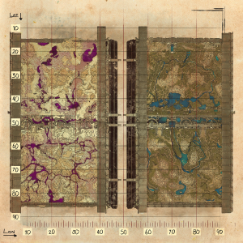
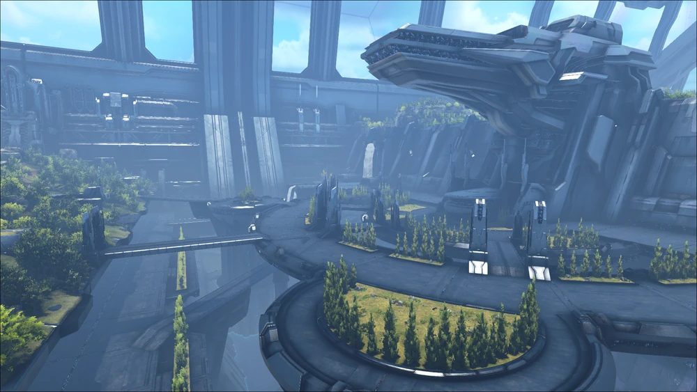
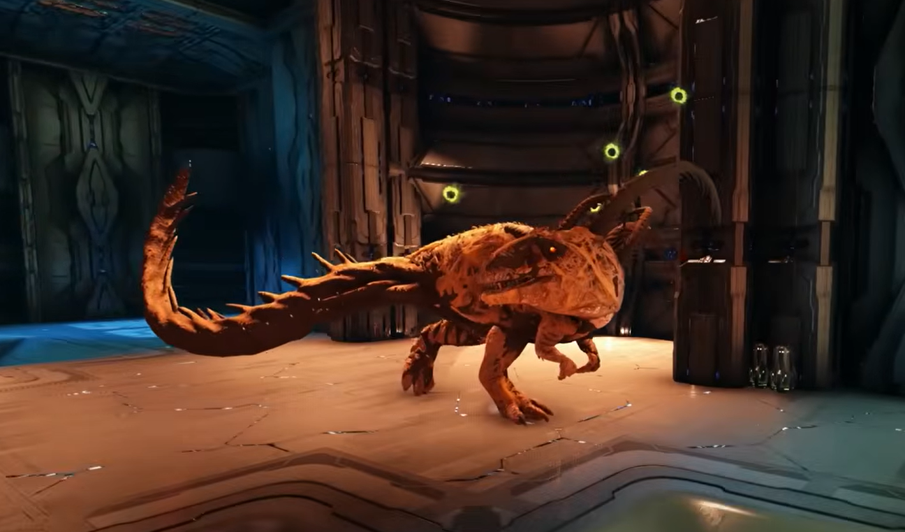
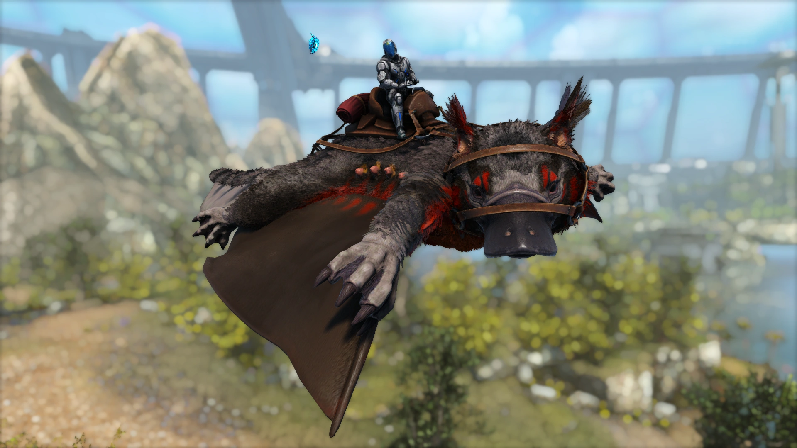
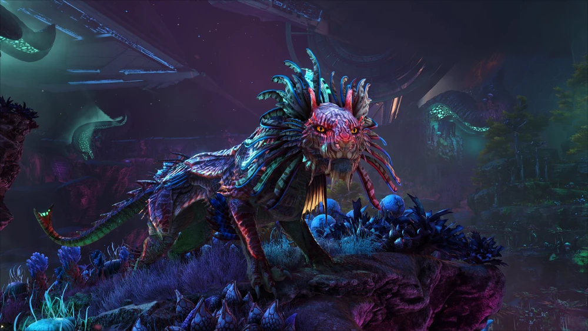
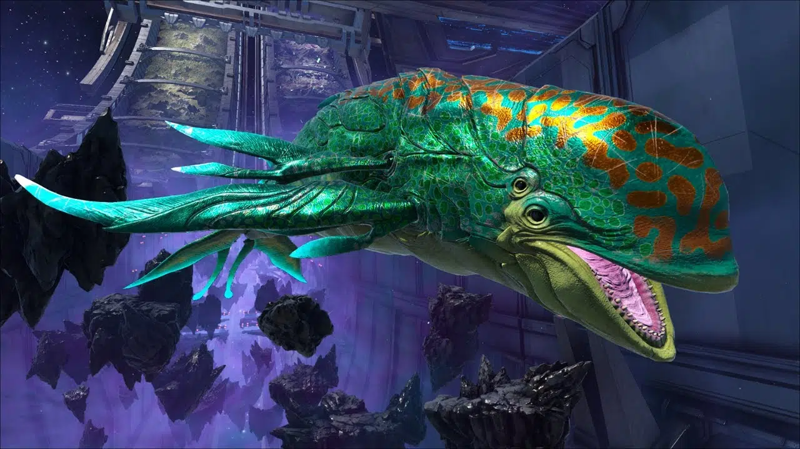
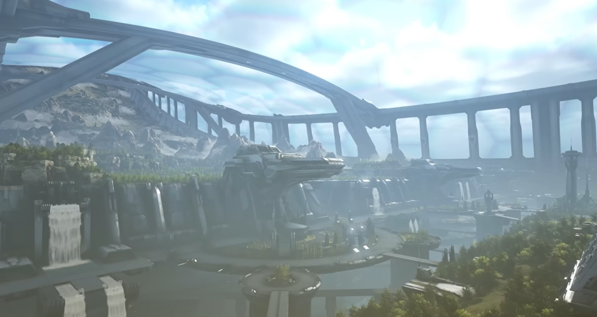
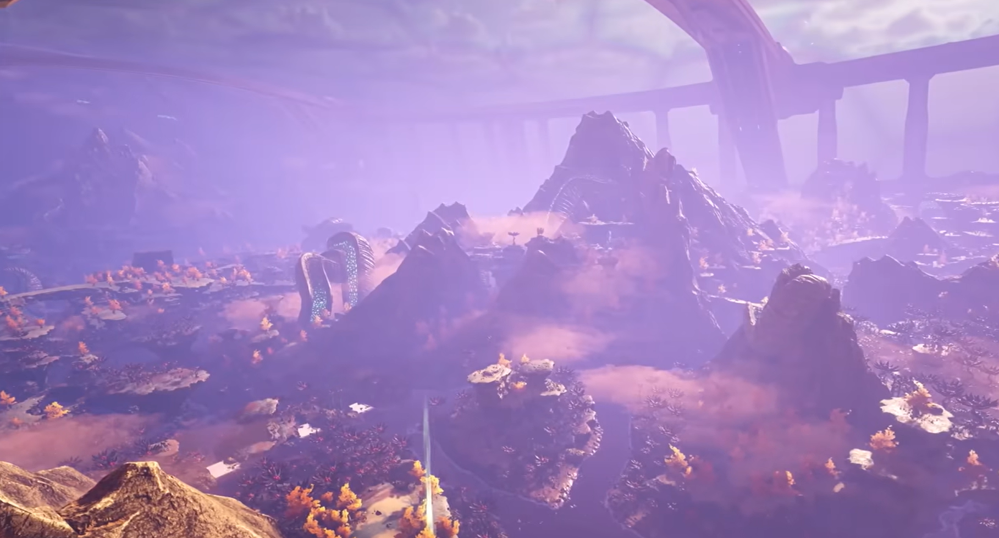
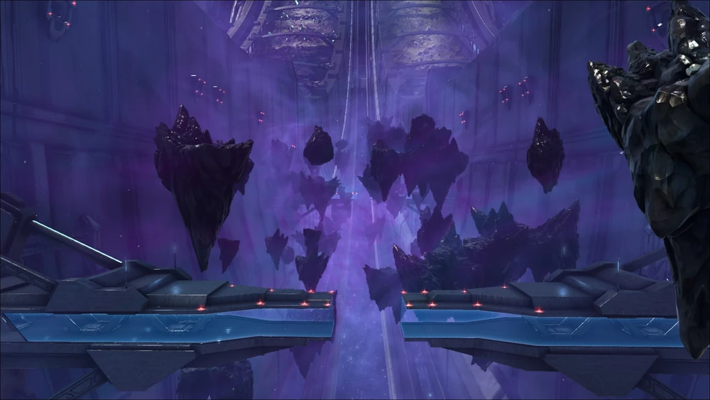

Geneis: Part 2
Genesis: Part 2 je peta story mapa ARK-a koja je izašla 3. lipnja 2021. kao plaćeni DLC koji je tada koštao €34.99 zajedno sa Genesis part 1.
Ova mapa je smještena na ogromnom Genesis-Shipu s dva prstena: na desnoj strani je običan prsten sa zelenim terenom i normalnim stvorenjima, a na lijevoj strani je koruptirani prsten pun ljubičastog terena i čudnih stvorenja

Po čemu je ova mapa posebna:

Ova mapa nastavlja mehanike Genesis Part 1 mape s misijama i HLN-A.
Dodaje nove vrste misija i stvorenja, samo što ovaj put nismo u simulaciji i nema mogućnosti teleportiranja, s iznimkom teleportiranja u prostorije namijenjene za misije.
Mapa je podijeljena u tri lokacije. Dva prstena, Eden, zeleni prsten, i Rockwell's Garden, ljubičasti prsten, te void, svemirski dio van broda između njih.
Misije naovoj mapi funkcioniraju isto, ali su dodane nove vrste misija.
Ove nove misije se više baziraju na priču i svaka ima svoje unikatne zadatke.
Jedna misija čak ima i mini-bossa pod imenom Experimental Giga koji je poput normalnog Giganotosaura samo koruptiran od strane Rockwell-a.

Stvorenja koja se ovdje mogu naći:
Maewing je mirna I pasivna životinja koja omogućava vrlo brzi način putovanja relativno rano u igri.
Njegova vogućnost jedrenja zrakom poput Rock Drake omogućuje brzo prelaženje ove najveće mape u igri.
Također ima mogućnost nošenja beba dinosaura sa sobom ako ih treba na siguran način prevesti.

Shadowmane je najznačajnija životinja ove mape te jedna od najjačih u igri.
Muški i ženski shadowmane svaki imaju svoje mogućnosti, ali njihove statistike koje su ravne Rex-u su ono zbog čega su jedni od najboljih opcija za preživljavanje ove mape.
Stvaraju se u Rockwell's Gardenu i nisu lagani za pripitomiti, ali ako uspijete, vrijedni će biti muke.

Astrodelphis je jednostavno rečeno, svemirski dupin, ćak mu je u imenu.
Stvaraju se u Void-u i pasivna su stvorenja, no malo muka kada ih se želi pripitomiti.
Kada su pripitomljeni su jedni od najbržih letećih stvorenja u igri i sa njihovim sedlom koje može pucati lasere, najbolja i najsigurnija opcija transporta na ovoj mapi.

Biomi:
Eden također poznat kao zeleni prsten, je sigurnije mjesto ove mape.
Ovdje se nalaze manje opasna stvorenja i ovdje većina ljudi započinje s ovom mapom.
Od planina, do rijeki i vodopada, ovdje su svi potrebni resursi kako bi započeli s ovom mapom i pripremili se sa dalje.


Rockwell's Grden također poznat kao ljubičasti prsten, je opasnija polovica ove mape.
Ovdje se stvaraju opasnija stvorenja, čak i Reaper-i iz Aberration-a. Također, nisu samo životinje te koje vas ovdje hoćeju ubiti, nego i mutirane verzije biljka.
Ovdje se nalazi većina resursa i životinja poput Shadowmane-a potrebnih za prelazak igre.
Void je prostor između prstenova i poseban je po tome što je svemir van broda.
Prepun je asteroida koji se mjenjaju svaki dan kako brod putuje kroz svemir tako da nikad nećete dva put vidjeti isti void.
Također, ti asteroidi mogu sadržavati određene resurse, s obzirom na vašu sreću. Mogu sadržavati metal, naftu ili ćak element.
